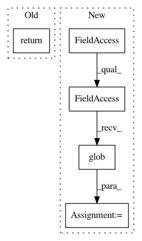

e9057c4df9ffc703e665ba8ee2d0d74c37d90065,official/nlp/data/tagging_data_lib.py,UdposProcessor,get_train_examples,#UdposProcessor#Any#,123
Before Change
]
def get_train_examples(self, data_dir):
return _read_one_file(
os.path.join(data_dir, "train-en.tsv"), self.get_labels())
def get_dev_examples(self, data_dir):
return _read_one_file(
os.path.join(data_dir, "dev-en.tsv"), self.get_labels())
After Change
else:
examples = []
// Uses glob because some languages are missing in train.
for filepath in tf.io.gfile.glob(os.path.join(data_dir, "train-*.tsv")):
examples.extend(
_read_one_file(
filepath,
self.get_labels()))
return examples
def get_dev_examples(self, data_dir):
if self.only_use_en_dev:
In pattern: SUPERPATTERN
Frequency: 3
Non-data size: 5
Instances
Project Name: tensorflow/models
Commit Name: e9057c4df9ffc703e665ba8ee2d0d74c37d90065
Time: 2020-11-14
Author: tianqiliu@google.com
File Name: official/nlp/data/tagging_data_lib.py
Class Name: UdposProcessor
Method Name: get_train_examples
Project Name: tensorflow/transform
Commit Name: aeb9242c189b5e4d2def65b497a3c1348ac9bd92
Time: 2020-08-03
Author: zoy@google.com
File Name: tensorflow_transform/output_wrapper.py
Class Name: TFTransformOutput
Method Name: vocabulary_file_by_name
Project Name: tensorflow/models
Commit Name: e9057c4df9ffc703e665ba8ee2d0d74c37d90065
Time: 2020-11-14
Author: tianqiliu@google.com
File Name: official/nlp/data/tagging_data_lib.py
Class Name: UdposProcessor
Method Name: get_dev_examples